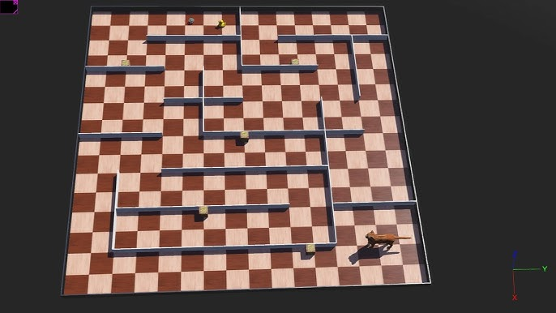

Project
Search and Rescue Drone
Multi-robot navigation and coordination in simulation.
Project
Multi-robot navigation and coordination in simulation.
This project simulates a multi-robot search-and-rescue mission inside the Webots robotics simulator. Two autonomous C++ agents navigate a procedurally generated maze, cooperate to locate a survivor zone, and return home — without any human intervention or pre-loaded map.
The scenario is modelled on real SAR operations where a team of small drones is deployed into a collapsed structure: each robot must independently explore unknown territory, share critical findings over a limited communication channel, and execute a coordinated extraction sequence.
TARGET_FOUND message over
a shared virtual channel. The partner robot acknowledges receipt, logs the
discovery timestamp, and transitions to its homing state.
